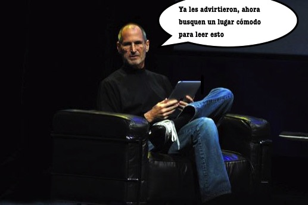
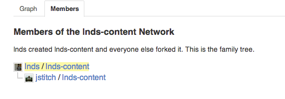
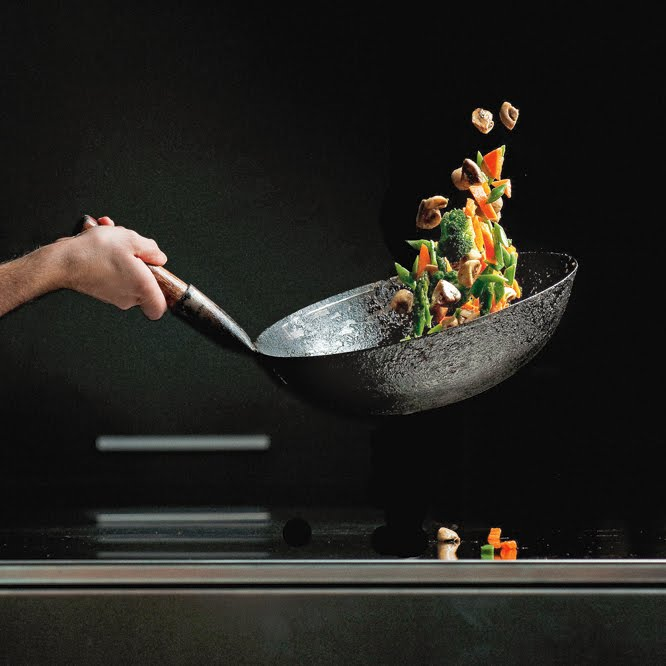
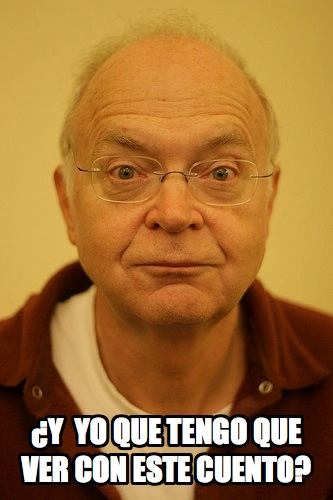
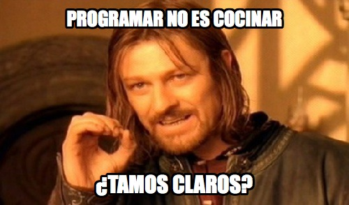
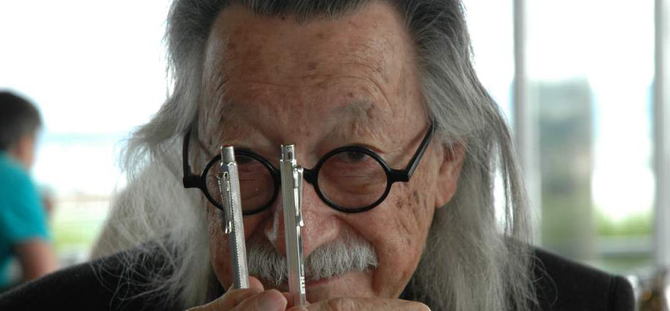
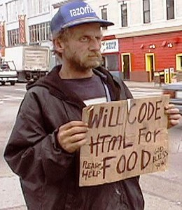
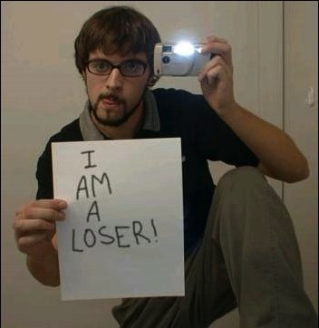
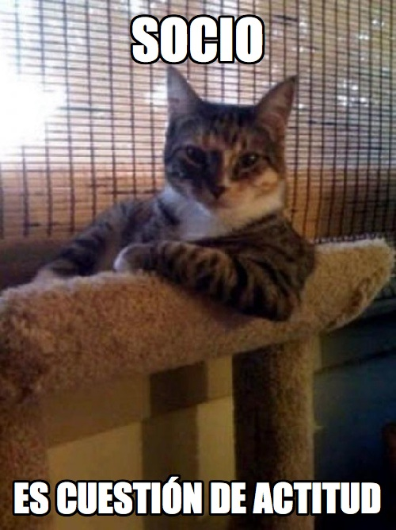

¡No somos cocineros!
Este post es largo, quiero decir laaaaargo, porque tiene ambición, y pretende decir muchas cosas importantes. Como dice el Chef Antoine de New Orleans (citado por Fred Brooks en The Mythical Man Month):
“La buena cocina toma tiempo. Si le hacemos esperar, es para servirle mejor, y complacerle”
Si yo fuera ustedes me buscaría un buen sofá, un momento de tranquilidad para leer esto, que en algunos momentos se puede poner bastante denso, pero creo que vale la pena. Al menos decidí tomarme el tiempo adecuado para escribirlo, con calma, con reflexión, como se debe hacer cuando las cosas que hacemos consideramos que son importantes.

Comunidad
“El hombre aislado no desarrolla ningún poder intelectual. Es necesario que él esté inmerso en un ambiente… Podría quizás hacer un poco de investigación por si mismo y lograr algunos pocos descubrimientos… la búsqueda de nuevas técnicas debe ser vista como algo realizado por la comunidad humana en su totalidad, más que por individuos.”
– Alan Turing
Yo escribo este blog para aprender. La preparación de un post me puede tomar mucho tiempo en algunos casos. Me tomo el tiempo porque me gusta aprender.
Cuando investigo encuentro cosas interesantes, descubro relaciones que no sospechaba, la apertura de mente que esto produce es notable. Si me pidieran un consejo sobre cómo mejorar , ya sea profesionalmente, o en la vida sería: “escribe un blog, pero escríbelo bien”, es decir, investiga, preocúpate de que lo que digas es veraz, y que esté bien argumentado. Preocúpate primero de lo esencial, que el tema sea interesante, e investígalo con la mayor profundidad que puedas dedicarle. También considera cuidadosamente lo accidental, como la ortografía y la redacción, en eso debo reconocer que tengo fallos, pero creo que la solución se da en el tiempo.
Sólo practicando un arte se puede llegar a dominarlo, incluso en los detalles accidentales.
Hace unos meses decidí que mis textos quedarían en un repositorio GitHub, de modo que cualquiera pueda clonarlos y ayudarme a mejorar la calidad de mis post. Por ejemplo, uno de mis lectores más antiguos, Javier Novoa (@jstitch), de México, encontró un fallo en uno de mis artículos, y gentilmente decidió usar esta herramienta para ofrecerme la corrección, mediante lo que se conoce como un Pull Request. Finalmente el error lo descubrí y corregí en paralelo, pero fue la primera vez en que se plasmó la iniciativa, la intención que yo buscaba al publicar mis textos en GitHub, que ustedes me ayuden a corregir su contenido. Este blog es opensource, lo que significa que ustedes me pueden ayudar a mejorarlo y a enriquecerlo.

Algo tan personal, e individual como escribir un blog se enriquece con la comunidad, uno no escribe para si mismo, sino que para que los otros lo lean. Pero el blog tiene la ventaja que permite el debate, los comentarios, y la interacción con otros autores. Cuando el cuadrito para comentar se hace corto, tienes que recurrir a tu propio espacio y escribir tu propio post respondiendo al otro. Al menos es lo que hago yo en muchos casos.
Pero me parece que he dado un paso más, porque ahora además de comentar, ustedes pueden ayudar directamente a mejorar la calidad de este blog.
La Naturaleza del Software
La razón por la que ahora puedo “enriquecer” aún más el contenido de este blog, con la ayuda de ustedes, es porque, después de todo, estas palabras que escribo son software.
En una oportunidad por twitter alguien me comentó que ahora podría remezclar mis textos y llevarlos a audio, usando tecnología text-to-speech, y quien sabe, en un acto de creatividad máxima se podría hasta musicalizar. ¡Eso sería notable!
Esa es la infinita plasticidad del software, uno de sus atributos que lo hace tan fascinante, una de las creaciones más importantes del ingenio humano.
El software es más que código. Si no se ha entendido eso, entonces se produce una limitación muy importante. Hay muchas personas que producen software sin ser conscientes de eso. El software ha permeado nuestras vidas cotidianas sin darnos cuenta. Parece invisible, está dado. Nadie reflexiona mucho sobre la naturaleza del software que corre en sus móviles, o tablets. Esa es la gracia, y la desgracia al mismo tiempo. Es ese impacto profundo que hemos logrado en las vidas de las personas, esa transformación silenciosa, que es tan maravillosa y aterradora a la vez.
¿Qué es el software?
“¿Qué es el software? ¿Por qué profesionales y científicos clásicos, para qué decir los “humanistas”, aprecian/usan/usufructuan del software pero desprecian la actividad y sus profesionales? Argumentaré que se debe a que el software es primo hermano de la cocina. Y esta gente lo intuye. La cocina es una actividad cuyos productos son apreciados como pocos, pero cuya actividad y quienes la desarrollan parecieran pertenecer a la oscura trastienda de lo socialmente superfluo.”
El texto citado fue publicado hace pocos días en el blog del Departamento de Ciencias de la Computación de la Universidad de Chile, bajo el título El Goce Del Puro Hacer y escrito por Claudio Gutierrez académico de ese departamento.
En ese artículo desarrolla un argumento que trataré de resumir en los próximos párrafos.
Motivado por la lectura del Gorgias de Platón, el autor pretende explicar por qué la “intelectualidad clásica” usufructa del software, pero desprecia esta actividad y a sus profesionales.
La hipótesis escogida es que “el software es primo hermano de la cocina”, y dado que, tal como se muestra en el diálogo de Platón, el cocinar siempre ha sido menospreciado por los filósofos, entonces el software es despreciado de la misma manera.
Es decir, el software es como la cocina, y lo que buscamos de la cocina es placer (adulación). Pero hay adulación positiva, la realización de los deseos, y adulación negativa que corresponde a la manipulación de los deseos.
Los programadores, de acuerdo a Gutierrez, lo que hacen es satisfacer los deseos de los usuarios mediante el software. A esto, el autor lo llama la “adulación del hacer”. Dado que autores tan prestigiosos como Fred Brooks o Ivar Jacobson han fracasado en definir la naturaleza del software, entonces nos quedamos con que esta consiste en la “adulación del hacer”.
Y esto constituye una doble falta a los ojos de la tradición, porque: “Primero, al desarrollador de software no le importan las causas, la naturaleza. No se ocupa del “bien”, sino de lo que desea el usuario. Por ello no constituye un arte; es adulación. Segundo, lo adulado por el software, el hacer, al contrario del cuerpo o del alma, es algo que nunca ha sido bien mirado.”
¿Por qué no es bien mirado? Porque todos quieren obtener placer sin hacer nada. Eso es lo que se le ofrece a las nuevas generaciones. Y luego viene el epílogo que a mi personalmente me deja con una sensación extraña:
Terminemos: ¿sería posible un mundo sin software? Por supuesto. Y sería un mundo más tranquilo, con haceres pausados y rústicos. La gente no moriría de hambre ni de frío… pero sí de aburrimiento. No habría nadie que nos adule en el hacer, que satisfaga el insaciable placer del hacer.
Vamos a tratar de aclarar todo lo anterior, porque me parece que ya se ha vuelto bastante confuso.
Filosofía y Cocina
“Tengo siempre la costumbre, cuando alguien habla, de prestarle mi atención, especialmente cuando el que habla me parece sabio, y en mi deseo de comprender lo que dice, averiguo, reexamino, comparo lo que se dice, a fin de aprender. Si el que habla me parece de poco valer, ni insisto en mis preguntas ni me intereso por lo que dice. En esto reconocerás a los que yo considero sabios; encontrarás que soy insistente sobre lo que dicen y que interrogo para aprender y sacar provecho.”
– Sócrates en el Diálogo de Platón “Hipias Menor”

El primer problema es que no tenemos claro que es lo que el autor entiende por software. De lo que se puede entender del texto creo entender de que está hablando de la programación, más que del software en sí. Y ahí creo que parte la confusión del argumento.
El otro problema, radica en la tesis que se nos presenta, que parece una petición de principios. La tesis, recordemos, es que la intelectualidad clásica usufructa del software pero desprecia esta actividad.
En esencia el argumento va más a o menos así.
- La intelectualidad clásica desprecia el software.
- El software es como la cocina, porque es una adulación, no un arte.
- La intelectualidad clásica se place en la adulación (como cualquiera), pero sin embargo la desprecia.
- Luego la intelectualidad clásica desprecia el software.
La demostración se sostiene en la premisa de que el software es adulación del hacer, y esta consiste en que el software se hace para satisfacer los deseos del usuario.
Pero esa definición más parece un truco retórico (petición de principios) y por esto creo que se cae el argumento (es notable el hecho de que el Gorgias sea el diálogo sobre la retórica, y que en uno de sus pasajes lo que trata de probar Sócrates es que la retórica no es más que un truco, algo menor, no un arte y por lo tanto sea menos valiosa).
¿Y qué hay de malo con esa definición? Porque si ésta se sostiene, aunque haya algún problema lógico formal con la exposición, el argumento central puede salvarse.
El problema del cocinero
Me gusta la cocina, y mucho. No me considero un cocinero, apenas me aparezco por la cocina, es la verdad, pero de repente tomo mi wok y preparo algo salteado, o alguna ensalada.

Del cocinar lo que me más me gusta es la experimentación, la mezcla de sabores. Efectivamente cocinar es una actividad placentera, y sorprender a los comensales es la gran recompensa, y por lo tanto lo que buscamos al cocinar es adular, tal como dice Sócrates en el Gorgias.
Por otro lado las analogías de la programación y la cocina surgen de manera natural. Ya les conté en otra ocasión como cocinar te da una visión especial de lo que significa abordar la comprensión y programación de un algoritmo.
Y con todo eso, no puedo decir que mi profesión sea similar, o parecida a cocinar, al menos no si la entendemos como simplemente adular al usuario.
Podríamos discutir si la cocina más que una adulación, y al contrario un verdadero arte. Al menos, en muchos aspectos parece serlo, y un chef seguro que defendería ese punto.
Cuando la cocina va más allá de la simple técnica, y es mucho más que mezclar ingredientes, hace algo más que complacer al usuario en su requerimiento, y es el arte del Chef el sorprendernos, no olvidemos eso. (Les recomiendo leer mi reflexión sobre la película Ratatouille donde elaboro un poco más este punto, y refuerzo mi idea de que en realidad el programar es más parecido a hacer cine que a cocinar).
Entonces, sólo si la cocina va más allá de complacer al usuario, podríamos empezar a aceptar la comparación. Pero tratemos de aclarar estos términos.
Dinning Philophers
Hay un famoso problema en computación conocido como el problema de la cena de los filósofos, planteado por Edsger Dijkstra para representar el problema de sincronización de procesos en los sistemas operativos. Vease Wikipedia
Ese problemas nos permite recordar la vieja máxima que para filosofar primero hay que tener la barriga llena. La filosofía requiere que ciertas necesidades básicas estén cubiertas, si hasta Ciorán y los filósofos estoicos tenían resuelto ese problema, se sabe que Diógenes, el más pobre de los filósofos, tenía resuelto el problema con lentejas, y ¡pucha que son ricas las lentejas! Lo que me sugiere que este puede ser un buen momento para preparse algún bocadillo antes de continuar ;-).
Así que sólo si hemos resuelto el problema básico de comer, nos dedicamos a filosofar. Puede ser que por esa razón a los filósofos no les ha interesado dedicarle mucho tiempo al problema de cocinar. Para ellos eso es una cosa resuelta, ¿para que dedicarle más vueltas?
Pero la verdad es otra. Sucede que mi hermano es filósofo y vivimos juntos en un pequeño departamento durante nuestra época de universidad. Así que mientras él estudiaba, yo estaba expuesto a estos textos. Fue ahí donde desarrollé mi gusto por los Diálogos de Platón, y el Gorgias es un texto importante. Gorgias es el diálogo sobre la retórica (que notable coincidencia). Es uno de los textos maduros de Platón, donde plantea sus ideas, usando la voz de Sócrates, sobre la política y la justicia, tema que profundizará en su famosa obra magna La República.
Hay un apartado del Gorgias que habla sobre la naturaleza de la retórica, y si esta tiene que ver con la justicia y la política. En un momento del diálogo la discusión se centra en determinar si la retórica es un arte como afirma Gorgias. Sócrates niega esta posibilidad, y argumenta que la retórica no es un arte como la considera Gorgias, sino que una práctica, un truco, algo menor, “adulación” (y acá vienen los problemas de las traducciones). Para sostener este punto, Sócrates usa varias analogías, una de las más famosas es la de comparar la cocina con la medicina.
Es importante también entender que los griegos consideraban la frugalidad una virtud, de hecho encontraban decadentes a los persas, sus eternos enemigos, por su lujo y exhuberancia gastronómica. Ser chef no era buen negocio en la Grecia de Platón.
Aunque es un ejercicio un tanto ocioso, yo sostengo lo contrario que dice Gutierrez, que si Platón viviera en este tiempo tendría que llegar necesariamente a la conclusión que el software es el producto de un arte, no una adulación, si es que su pensamiento es coherente con lo que expone en el Gorgias. Allí está el [Gorgias](http://es.wikisource.org/wiki/Gorgias_(Plat%C3%B3n%29) para que puedan sacar ustedes sus propias conclusiones.
Pero para aclarar mi punto voy a citar a Donald Knuth que lo expone bastante bien en su hermoso discurso sobre el arte de la programación.
Si vamos a las raíces latinas, encontramos ars, artis que significan “habilidad”. Quizás es significativo que la palabra griega correspondiente era τεχνη, la raíz de “tecnología” y “técnica”. * (Esta es la palabra usada por Platón en el Gorgias, nota de E.D.)
En nuestros días cuando alguien habla de “arte” probablemente piense primero en las “finas artes” tales como la pintura y la escultura, pero antes del siglo veinte la palabra era usada generalmente en un sentido bastante diferente.
En los tiempos medievales, las primeras universidades fueron establecidas para enseñar las, así llamadas, “siete artes liberales” a saber, gramática, retórica, lógica, aritmética, geometría, música y astronomía. Noten que esto es bastante diferente de los currículos de los colegios de artes liberales, y que al menos tres de las siete artes liberales son componentes importantes de la ciencia de la computación. En aquel tiempo, un “arte” denotaba a algo ideado por el intelecto humano, en oposición a las actividades derivadas de la naturaleza o el instinto; las artes “liberales” eran liberadas o libres, en contraste a las artes manuales tales como arar. Durante la edad media la palabra “arte” por si misma usualmente significaba lógica, la que usualmente denotaba el estudio de los silogismos.

Tal como nos dice Knuth, hace rato que los filósofos clásicos definen el arte como el producto del intelecto humano, comer es algo que viene del instinto, y por lo tanto el cocinar por ser una actividad vinculada o originada de una necesidad primaria, no puede ser considerada arte en el sentido clásico del término.
Por lo mismo, no puede ser considerado el software algo menos que el arte, ¡por la misma razón que expone Gutierrez en el último párrafo de su artículo! Porque precisamente puede concebirse un mundo sin programación, porque la programación surge como una actividad propia del intelecto humano, más allá de las necesidades básicas o naturales. La programación está más allá de la simple adulación o satisfacción del placer. No es adulación en el hacer. El desafío intelectual nace de la necesidad de resolver un problema mayor, tal como en la concepción platónica la política nace del problema de buscar la justicia y la verdad, la programación, y por ende el software, nacen de una necesidad mayor aún, la de resolver un problema.
Y acá es preciso que agregue más palabras del discurso de Knuth:
La Ciencia es conocimiento que entendemos tan bien que se lo podemos enseñar a un computador, y si no podemos entender algo completamente, es un arte tratar con él. Dado que la noción de un algoritmo o programa de computador nos provee de una prueba extremadamente útil de la profundidad de nuestro conocimiento sobre un asunto dado, el proceso de ir desde un arte a una ciencia significa que aprendemos cómo automatizar algo.
Así que no puedo aceptar que la programación es adulación en el hacer, pues es más que eso, es un arte en el sentido clásico del término, y al ser un objeto cuya raíz es el intelecto humano no puede ser comparado con el cocinar, que nace de cubrir una actividad humana básica. En el sentido clásico, el programar sería un arte liberal.

Bondad, Belleza y Verdad
El programador desarrolla un software que hace lo que el usuario quiere. No existe un programa “bueno”, “verdadero”, “bello”, absoluto. Un buen software satisface deseos en el mundo del hacer. Nada más. Muchas veces estos se confunden con los chatos deseos de los empresarios: eficiencia, velocidad, economía. -- Claudio Gutierrez, Op. Cit.
Hay en el fragmento que acabo de citar muchas consecuencias que me preocupan. Es sabido desde antiguo que no se puede cargar de virtudes propias del ser humano a las cosas, o a los animales. Un cuchillo no es culpable de un asesinato. Es el uso que hacemos de ellas y sus virtudes estéticas las que nos hacen apreciarlas en mayor o menor medida. Decimos, este cuchillo es bueno si cumple adecuadamente su función. Por lo mismo, decimos que un un programa (no un software) es útil, o bueno. La belleza del mismo es un atributo que dependerá del observador.
Una aplicación puede ser útil, y bella a la vez. Esa belleza puede ser apreciada a distintos niveles y por distintas personas. Para un usuario la belleza puede estar en la interfaz, en la fluidez y diseño de las interacciones. Si la aplicación responde adecuadamente, resuelve el problema, pero además es agradable de ver, será apreciada.
Pero un técnico puede apreciar la belleza de una aplicación a otros niveles. En su arquitectura, el grado de acoplamiento, la elegancia en el diseño de las APIs. Incluso se puede apreciar en el estilo de programación. Cómo diría Dijkstra, “La Belleza es Nuestro Negocio”
El ingeniero apreciará la eficiencia, velocidad y economía de recursos. Yo recuerdo que cuando estudié ingeniería nos hacían apreciar estos tres aspectos, y no porque sean “chatos deseos de empresarios”, es labor del ingeniero usar los recursos de manera eficiente y económica. Parece que eso ha cambiado en el discurso académico, ¿o será que ya no hay ingenieros formando ingenieros, y se han olvidado las viejas virtudes de esta noble profesión?
Si no hay bondad, belleza y verdad en el quehacer del profesional, y sólo el deseo compulsivo de complacer, entonces ya no vale la pena dedicarse a la profesión. Yo creo que esta idea es peligrosa, desalentadora. Al menos no quiero dedicarme a una profesión que se vea si misma de ese modo, no es por eso por lo que me he dedicado al hermoso arte de la programación todos estos años.
El programador compulsivo
Pero hay un riesgo con la programación, es una suerte de patología, identificada por Joseph Weizenbaum hace muchos años atrás, y que si seguimos y extrapolamos la visión de la “adulación en el hacer” nos puede hacer caer directamente en esta trampa.
Porque de la adulación del hacer es fácil caer en el programar por el simple placer que produce programar.
El programador de computadoras, [...] es el creador de universos para los cuales es el único legislador. Así, también, es el diseñador de cualquier juego. Pero universos de complejidad virtualmente ilimitada pueden ser creados en la forma de programas computacionales. Más aún, y este es un punto crucial, los sistemas así formulados y elaborados actúan sus guiones programados. Sin chistar siguen sus leyes y vívidamente exhiben su comportamiento obediente. Ningún dramaturgo, ningún director de escena, ni emperador, no importa cuan poderoso, ha jamás ejercido tal autoridad absoluta para ordenar un escenario o campo de batalla y para comandar tales inquebrantables y cumplidores actores o tropas.
Uno debería sorprenderse si la observación de Lord Acton de que el poder corrompe no fuera aplicable en un ambiente en el cual la omnipotencia es tan fácilmente alcanzable. Aplica. Y la corrupción evocada por la omnipotencia del programador de computadores se manifiesta en una forma que es instructiva en un dominio mayor que el ambiente inmediato del computador. Para entenderlo, tenemos que observar un desorden mental, que aunque bastante antiguo, parece haberse transformado en un nuevo tipo: la compulsión por programar.
[En distintos centros de cómputo] brillantes jóvenes de aspecto descuidado, a menudo con ojos rojizos y hundidos, pueden ser vistos sentados en consolas de computadoras, con sus brazos tensos y esperando para disparar sus dedos, listos para atacar a los botones y teclas en los cuales su atención parece estar remachada como lo está el jugador sobre los dados rodando. […] Ellos trabajan hasta que prácticamente desfallecen, veinte, treinta hora de una vez. Su alimento, si lo disponen, llega a ellos: café, Coca Colas, sandwiches. Si es posible duermen en sacos cerca del computador. Pero sólo por pocas horas, luego vuelven a la consola.[…] Sólo existen, al menos cuando están enganchados, a través y por las computadoras. Son vagos de los computadores, programadores compulsivos. Son un fenómeno internacional.
¿Cómo puede distinguirse a un programador compulsivo de un programador profesional dedicado que trabaja muy duro? Primero por el hecho de que el programador profesional ordinario se dedica al problema a ser resuelto, mientras que el programador compulsivo ve el problema principalmente como una oportunidad de interactuar con el computador. El programador común usualmente discutirá tanto su problema sustantivo como los problemas técnicos con otros. Generalmente hará un trabajo preparatorio largo, como escribir y diagrama, antes de trabajar con el computador en si mismo. Sus sesiones con el computador pueden ser comparativamente cortas. Incluso puede que deje que otros hagan el trabajo en la consola. Desarrolla su programa de forma lenta y sistemática. Cuando algo no funciona, puede pasar mucho tiempo lejos del computador, considerando hipótesis cuidadosamente sobre las causas del malfuncionamiento, y diseñando experimentos cruciales para probarlas. […] Es capaz, mientras espera los resultados del computador, de atender otros aspectos de su trabajo, como documentar lo que ya ha hecho. Cuando ha compuesto el programa que que pasa a producción, es capaz de escribir una descripción razonable de este y cambiar su atención a otras cosas. El profesional ve la programación como un medio para un fin, no como un fin en si mismo. Su satisfacción viene de haber resuelto un problema sustantivo, no de haber sometido al computador a su voluntad."
– Joseph Weizenbaum, Science and the Compulsive Programmer, en Computer Power and Human Reason, 1976

Voy a repetir eso último porque es importante: la satisfacción del programador profesional viene de haber resuelto un problema sustantivo, no de haber sometido el computador a su voluntad.
Cuando Weizenbaum escribía la labor de programación profesional requería de un mayor tiempo de reflexión alejada del computador a lo que se da hoy. En la actualidad, la interacción con el computador es más compulsiva que en 1976, porque tenemos compiladores más rápidos, metodologías más ágiles. El peligro de compulsión es mayor en mi opinión.
En su libro Computer Power and Human Reason, Joseph Weizenbaum advierte sobre los peligros de esta patología, y la compara con otras ya conocidas, como la del jugador/apostador compulsivo. Y tiene razón en muchas de sus preocupaciones. Es más, sospecho que muchas corporaciones tecnológicas abusan de esta patología para explotar a estos brillantes jóvenes. No es para nada coincidencia que se les ofrezca tener el campus, la comida, y todas sus necesidades cubiertas (incluso la recreación) en los mismos edificios donde trabajan. Tampoco es coincidencia que los confites, bebidas energéticas sean gratis en estos centros de programación, está estudiado que el chocolate aporta nutrientes que afectan nuestro estado de ánimo y bienestar (el triptófano que regula la serotonina conocida como la hormona del bienestar, la feniletilamina un neuromodulador que mejora el estado de ánimo, y la anandamina que nos hace sentir tranquilos y contentos).
Pues bien, el programador compulsivo estará de acuerdo con esta idea del placer del puro hacer de la programación. Y no se si Claudio Gutierrez está de acuerdo o no conmigo, porque no me queda claro si es una preocupación para él, o es algo que encuentra positivo.
Finalmente creo que esta “patología” del programador compulsivo termina expresándose en otro tipo de estado de ánimo, que exacerba una necesidad natural del ser humano, que es el sentido de reconocimiento.
El Programador Emo

¿Por qué profesionales y científicos clásicos, para qué decir los “humanistas”, aprecian/usan/usufructuan del software pero desprecian la actividad y sus profesionales?
Todos necesitamos reconocimiento. Es una necesidad tan natural, que la exigimos desde el momento en que lloramos por primera vez para demandar la atención de nuestra madre.
Sin embargo, con el tiempo vamos madurando y reconociendo que no es necesario andar exigiendo reconocimiento, que este llega sólo como fruto de una tarea bien hecha. Ganamos en seguridad, y cuando ya estamos maduros no andamos mendigando reconocimiento, sabremos que lo obtendremos por la calidad de nuestras acciones.
Por eso cuando leo un texto como el citado al principio de esta sección me molesto, porque cae en ese lugar común de muchos informáticos y que a esta altura francamente me tiene bastante tostado.
Es esa actitud de “pobrecitos nosotros los informáticos, todos usan nuestras creaciones, pero aún así somos ignorados por todo el mundo, nadie nos quiere, todos nos odian, queremos comer gusanos…”, como dice una vieja canción infantil proto-emo de los ochenta.

Si esperas ser reconocido porque doblegaste la voluntad del computador, entonces estás perdido, a nadie le va interesar eso, salvo quizás a otros programadores compulsivos como tu mismo.
Pero si tu actividad es sustancial, si aporta al bienestar de la humanidad, si tu aporte es valioso, bello, justo. Si resuelves una necesidad, si rascas una comezón, si aportas realmente a otro ser humano, el reconocimiento llegará.
Yo he sentido muchas veces la gratitud. Hace unos meses atrás conocí a una mujer que supo que yo había escrito cierto programa hace varios años atrás y que ahora ella estaba usando. Cuando nos presentaron se acercó a mi me dio la mano y un abrazo, y me agradeció, pues encontraba que mi programa era la solución más útil y práctica que había encontrado en muchos años para su problema.
¿Puedo decir que mi actividad es despreciada por otros? No, porque tengo muchos ejemplos y anécdotas similares que contar. ¿Que mayor satisfacción es esa?
El problema no es que otros no aprecien a los informáticos y sus obras, el problema creo yo es que los que se quejan de esa falta de reconocimiento nunca han resuelto nada que realmente pueda ser apreciado, o están en el lugar equivocado. Entonces, ¿de quién es el problema?
